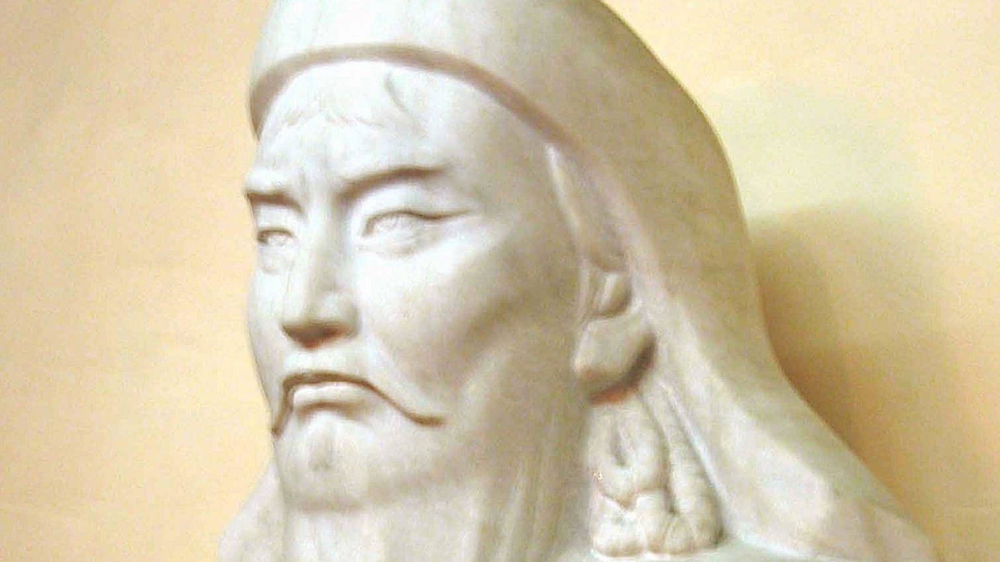
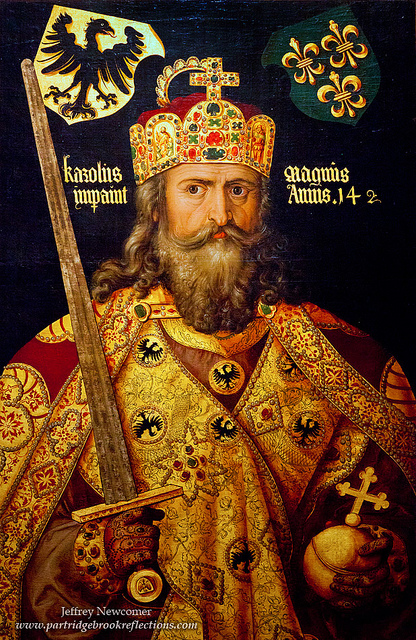
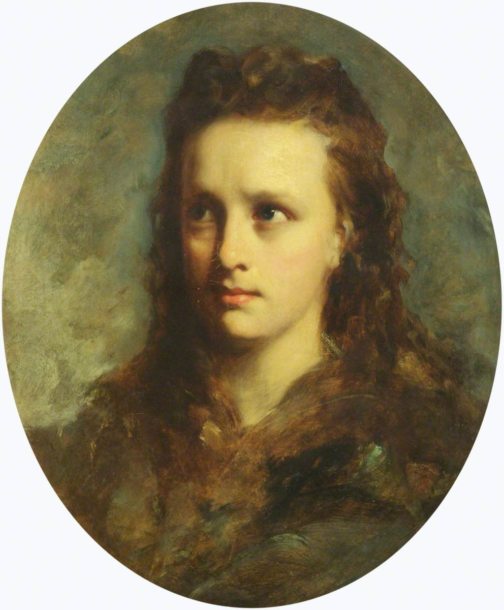

1. Genghis Khan (c. 1162 – 1227)

Genghis Khan (c. 1162 – 1227), born Temüjin, was the founder and first Great Khan of the Mongol Empire, which became the largest contiguous empire in history.
He is known for his military genius, unification of the Mongol tribes, and creation of an empire that spanned much of Asia and parts of Europe.
His leadership, strategies, and administrative reforms had a profound and lasting impact on world history.
Early Life
Genghis Khan was born around 1162 in the Mongolian steppes, into the Borjigin clan. His father, Yesügei, was a tribal chief, and his mother, Hoelun, played a crucial role in raising him after his father was poisoned by rival tribes.
Temüjin grew up in a harsh environment marked by tribal warfare, scarcity, and political instability. Despite these challenges, he demonstrated early leadership qualities, intelligence, and resilience.
He worked to build alliances and develop loyalty among his followers, skills that would later enable him to unify the Mongol tribes under his leadership.
Major Contributions / Career
Genghis Khan’s primary achievement was the unification of the Mongol tribes in 1206, after which he was proclaimed Genghis Khan, meaning "universal ruler."
He implemented a merit-based system for leadership and military command, replacing the traditional aristocratic hierarchy.
Genghis Khan led his armies in highly disciplined and innovative campaigns, conquering large territories in Central Asia, China, Persia, and Eastern Europe.
He utilized strategies such as rapid cavalry movements, psychological warfare, and intelligence networks, which allowed his forces to defeat much larger armies.
Military Strategies and Governance
Genghis Khan is celebrated for his military genius and administrative reforms. He organized the Mongol army into units of tens, hundreds, and thousands, emphasizing discipline, mobility, and communication.
He encouraged loyalty by promoting commanders based on merit rather than family ties. Beyond warfare, he implemented laws known as the Yassa, which regulated social conduct, military discipline, and governance across the empire.
Genghis Khan also promoted trade, diplomacy, and cultural exchange along the Silk Road, facilitating connections between East and West.
Final Years / Legacy
Genghis Khan died in 1227, likely during a military campaign, though the exact circumstances remain uncertain. After his death, his empire was divided among his sons and continued to expand under his successors.
His legacy includes the creation of the largest contiguous empire in history, lasting cultural and economic exchanges across Eurasia, and the spread of Mongol administrative practices.
Genghis Khan is remembered as one of the most influential leaders in world history, a brilliant strategist, and a unifier of diverse peoples under a single empire.
2. Charlemagne (c. 742 – 814)

Charlemagne, also known as Charles the Great, was one of the most influential rulers of medieval Europe. He became King of the Franks in 768, King of the Lombards in 774,
and was crowned the first Holy Roman Emperor in 800. His reign marked the unification of much of Western Europe for the first time since the fall of the Roman Empire.
Charlemagne is remembered not only for his military conquests but also for his contributions to education, administration, law, and the promotion of Christianity, which left a profound legacy on European civilization.
Early Life
Charlemagne was born around 742, the son of Pepin the Short, the first King of the Franks from the Carolingian dynasty, and Bertrada of Laon.
Growing up during a period of political instability and frequent tribal warfare, Charlemagne was exposed to military campaigns from an early age.
He received an education that included Latin, religious teachings, military strategy, and the principles of governance.
From his youth, he demonstrated intelligence, leadership, and a keen sense of justice.
His father’s death in 768 led to Charlemagne sharing rule with his brother Carloman, though after Carloman’s death in 771, Charlemagne became the sole ruler of the Franks,
beginning a reign marked by military expansion, administrative reforms, and cultural revival.
Major Contributions and Career
Charlemagne’s reign was characterized by both military conquest and political consolidation. He led campaigns against the Saxons, Lombards, Avars, and other neighboring tribes,
expanding his kingdom into modern-day France, Germany, Italy, and parts of Spain. Charlemagne’s military campaigns were often strategic and well-planned,
combining diplomacy, alliances, and the use of highly disciplined troops. His success in warfare enabled him to unify diverse peoples under a centralized authority.
In 800, Pope Leo III crowned Charlemagne as Emperor of the Romans, symbolically linking his rule to the legacy of the Roman Empire.
Beyond conquest, Charlemagne focused on governance, creating a system of local counts to manage territories and sending royal inspectors, known as missi dominici,
to oversee justice, administration, and adherence to royal policies.
Cultural and Educational Achievements
Charlemagne placed a strong emphasis on learning, education, and cultural revival.
He invited scholars from across Europe, including Alcuin of York, to his court and encouraged the preservation and copying of classical texts.
The Carolingian Renaissance, which flourished under his rule, promoted literacy, scholarship, art, and architecture, laying the foundation for future European intellectual life.
Charlemagne also reformed religious institutions, strengthened the Church’s role in governance, and promoted Christian education among his subjects.
His dedication to learning and culture helped create a unified identity across his empire and ensured the transmission of knowledge for generations.
Final Years and Legacy
Charlemagne died in 814 in Aachen, Germany, leaving a vast and unified empire.
He is remembered as a visionary ruler who combined military skill, administrative genius, and cultural patronage.
His reign influenced the development of medieval European governance, education, and law. Charlemagne’s emphasis on Christianity, scholarship, and justice shaped European society for centuries.
His legacy as a unifier, protector of learning, and promoter of culture has made him an enduring symbol of leadership, power, and vision in world history.
3. Saladin (Salah ad-Din Yusuf ibn Ayyub) (1137 – 1193)

Saladin was a Muslim military leader, sultan, and statesman who rose to prominence during the Crusades.
He is renowned for uniting Muslim territories in Egypt, Syria, and the Levant and for his victory over the Crusaders at the Battle of Hattin, leading to the recapture of Jerusalem.
Saladin is remembered as a model of justice, military strategy, and chivalry, admired even by his adversaries.
Early Life
Saladin was born in 1137 in Tikrit, in modern-day Iraq, into a Kurdish family of military and political significance.
His father, Najm ad-Din Ayyub, served as a governor, and his uncle Shirkuh was a prominent general.
From a young age, Saladin received education in Islamic studies, military strategy, and leadership, preparing him for a career in governance and war.
He began his military career under his uncle, participating in campaigns in Egypt and gaining experience in strategy, troop management, and diplomacy.
Major Contributions / Career
Saladin became Sultan of Egypt in 1174, consolidating power and unifying Muslim territories under his leadership.
He restructured the military, introduced merit-based appointments, and strengthened political alliances.
His most famous military achievement was the Battle of Hattin in 1187, where he decisively defeated the Crusader forces, opening the way to capture Jerusalem.
Saladin combined strategic insight, disciplined leadership, and careful planning, allowing him to expand his territories while maintaining stability in the regions he governed.
Governance and Cultural Impact
Saladin was not only a military leader but also a capable administrator.
He promoted justice, fairness, and religious tolerance, allowing different faiths to coexist within his territories.
He supported education, architecture, and public works, strengthening cities like Cairo and Damascus.
His governance emphasized law, order, and the welfare of the people, creating a legacy of stability and prosperity that endured beyond his lifetime.
Final Years / Legacy
Saladin died in 1193 in Damascus after years of leadership and campaigns that reshaped the Middle East.
He left behind a unified Muslim empire and a reputation for wisdom, fairness, and military genius.
Saladin’s leadership influenced Islamic governance, military strategy, and diplomacy for generations.
He is remembered as one of the most respected leaders of the medieval world, admired for his courage, justice, and chivalrous conduct.
4. Joan of Arc (c. 1412 – 1431)

Joan of Arc was a French heroine, military leader, and religious figure who played a decisive role in the Hundred Years’ War.
She is celebrated for her courage, faith, and leadership, and became a symbol of French national identity and devotion.
Despite her young age, Joan’s actions altered the course of French history and inspired generations of people.
Early Life
Joan of Arc was born around 1412 in Domrémy, France, into a peasant family.
From a young age, she claimed to have visions of saints instructing her to support Charles VII and help liberate France from English occupation.
She grew up learning household skills, farming, and local religious traditions, while her visions instilled in her a strong sense of mission and purpose.
Despite her humble beginnings, Joan developed exceptional courage, determination, and leadership qualities that would shape her later life.
Major Contributions / Career
At the age of sixteen, Joan convinced Charles VII to allow her to lead French troops into battle.
Her leadership during the Siege of Orléans in 1429 was crucial in lifting the English siege, boosting French morale, and turning the tide of the war.
Joan participated in several military campaigns, showing personal bravery on the battlefield and inspiring soldiers with her determination and faith.
She also played a key role in securing Charles VII’s coronation at Reims, strengthening the legitimacy of his rule.
Military Leadership and Faith
Joan’s military strategy was guided by faith, intuition, and an understanding of morale and leadership.
She encouraged unity among troops, motivated them through speeches and personal example, and emphasized the divine nature of their mission.
Her presence challenged contemporary gender norms and demonstrated that leadership, courage, and strategic insight could transcend social expectations.
Joan’s combination of military action, religious conviction, and inspiring presence made her a unique and transformative figure in French history.
Final Years / Legacy
In 1430, Joan was captured by Burgundian forces, handed over to the English, and tried for heresy.
She was executed by burning at the stake in 1431 at the age of 19.
Posthumously, Joan of Arc was exonerated in 1456 and canonized as a saint in 1920.
Her legacy endures as a symbol of courage, faith, and patriotism, inspiring art, literature, and historical scholarship, and continuing to hold a central place in French national identity.
5. Mansa Musa (c. 1280 – c. 1337)

Mansa Musa was the tenth emperor of the Mali Empire and is renowned as one of the wealthiest and most influential rulers in world history.
His reign is celebrated for expanding the empire, promoting Islam, supporting education, and fostering economic and cultural prosperity across West Africa.
Early Life
Mansa Musa was born around 1280 into the Keita dynasty in the Mali Empire.
He was educated in leadership, governance, Islamic scholarship, and military strategy.
When he ascended the throne in 1312, he inherited a prosperous empire rich in gold, salt, and trade networks.
From early on, he demonstrated intelligence, diplomatic skill, and a commitment to the welfare of his people, ensuring the empire’s wealth and stability would flourish under his leadership.
Major Contributions / Career
Mansa Musa expanded Mali’s territories and strengthened trade across the Sahara and beyond, particularly in gold and salt.
He undertook a legendary pilgrimage to Mecca in 1324, showcasing his immense wealth and generosity, distributing gold to the poor, and impressing people across Africa and the Middle East.
His journey elevated Mali’s international reputation and strengthened diplomatic and cultural connections.
Mansa Musa also established Timbuktu and other cities as centers of trade, learning, and Islamic scholarship, attracting scholars, artists, and merchants from across Africa and beyond.
Governance and Cultural Impact
Mansa Musa established a highly organized and centralized administration, promoting justice, education, and religion.
He commissioned the construction of mosques, schools, and libraries, fostering a rich intellectual and cultural environment.
His support for Islamic scholars and institutions helped spread Islamic education and architecture throughout Mali.
By promoting prosperity, literacy, and social cohesion, Mansa Musa ensured the empire’s influence extended far beyond its borders, both economically and culturally.
Final Years / Legacy
Mansa Musa died around 1337, leaving a powerful, wealthy, and culturally rich empire.
He is remembered as one of the greatest rulers in African history, whose vision, generosity, and piety elevated Mali to international prominence.
His legacy includes the promotion of education, trade, and Islam, the expansion of the empire’s wealth, and the lasting cultural and architectural achievements that continue to define West African history.